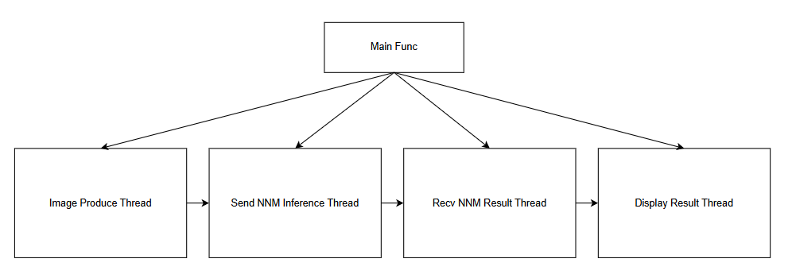
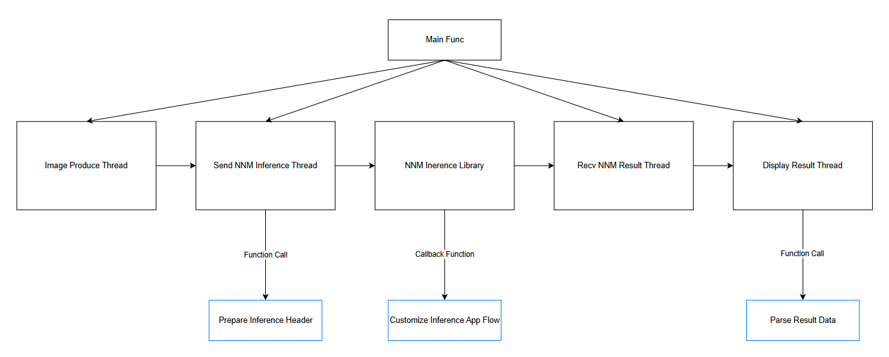
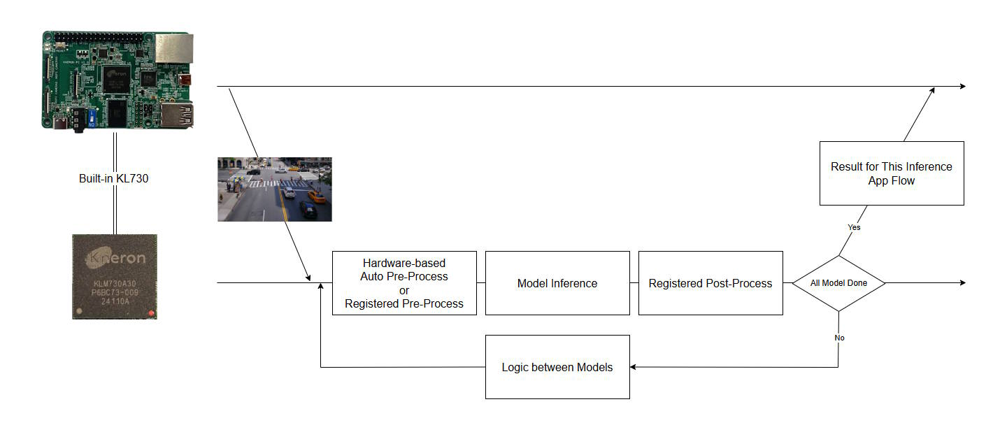

NNM Examples¶
Kneron Neural Network Management (NNM) is a Kneron-developed, Linux-based framework, which allows users to access AI device on chip.
All the examples discussed follow the basic AI flow mentioned in Introduction, but are expanded into four threads for optimization.

-
Image Produce Thread
This thread is used for producing the images to be inference by AI device in KNEO Pi.
In the NNM examples, four kinds of image producing methods are provided: Read Image File, Webcam, Sensor Module, and RTSP Stream.
-
Send NNM Inference Thread
This thread is used for activating the NNM inference process.
-
Recv NNM Result Thread
This thread is used for receiving results from the NNM inference process.
-
Display Result Thread
This thread is used to display the results received from previous thread.
In the NNM examples, two kinds of displaying methods are provided: Log Print and OpenCV Display.
NNM Related Library¶
The NNM related libraries should be installed under /usr/lib/vtcs_root_leipzig/, and the header files should be under /usr/include/vtcs_root_leipzig/.
Examples¶
Note
The examples must be run under the root account.
Build Examples¶
You can use the build script ${kneopi-example}/ai_application/nnm/build_all.sh to build an individual example or All examples.
$ cd ${kneopi-example}/ai_application/nnm/
$ sh build_all.sh
Please select the example(s) to be build:
---------------- Basic Examples ----------------
[1] example_nnm_image
---------------- OpenCV Example ----------------
[2] example_nnm_webcam
[3] example_nnm_sensor
[4] example_nnm_rtsp
---------------- All Examples ------------------
[5] All examples
Please enter 1-5:
Or you can build each example manually via cmake. The following steps use example_nnm_image as a demonstration.
$ cd ${kneopi-example}/ai_application/nnm/
$ mkdir build
$ cd build
$ cmake ../example_nnm_image
$ make
Execute Examples¶
The executable binary will be put in bin/. You can execute each of them as shown below:
example_nnm_image¶
This example demonstrates the usage of reading an image, performing app flow - YOLO object detection, and printing results as console log.
The executable binary example_nnm_image will be put in the bin folder after building. It will read the parameters from the file bin/ini/example_image.ini, which was copied from ${kneopi-example}/ai_application/nnm/res/ini/example_image.ini during the building process.
The parameters in example_image.ini contains:
- ModelPath: The path of the NEF model to be used for inference.
- JobId: The ID of the inference app flow. (e.g., YOLO object detection, car plate recognition, etc.)
- ImageName: The path of the input image.
- ImageWidth: The width of the input image.
- ImageHeight: The height of the input image.
- ImageFormat: The format of the input image. (Only accepts RAW8, YUV420, RGB565, and RGBA8888)
- Fps: The FPS of sending input image to inference.
- InfLoopTime: The number of times the inference should be run.
example_nnm_webcam¶
This example demonstrates the usage of getting images from webcam via OpenCV, performing YOLO object detection, and displaying the images with detection results through OpenCV.
The executable binary example_nnm_webcam will be put in the bin folder after building. It will read the parameters from the file bin/ini/example_webcam.ini, which was copied from ${kneopi-example}/ai_application/nnm/res/ini/example_webcam.ini during the building process.
The parameters in example_webcam.ini contains:
- ModelPath: The path of the NEF model to be used for inference.
- JobId: The ID of the inference app flow. (e.g., YOLO object detection, car plate recognition, etc.)
- CameraPath: The path of the webcam device.
- ImageWidth: The width of the image received from the webcam. (Support may vary by webcam.)
- ImageHeight: The height of the image received from the webcam. (Support may vary by webcam.)
- Fps: The image FPS received from the webcam. (Support may vary by webcam.)
Warning
The default CameraPath is set to /dev/video0, but it may not be the same every time due to the timing when the webcam is connected to KNEO Pi.
To search for the CameraPath, please use the command:
$ v4l2-ctl --list-devices
[root@kneo-pi ~]# v4l2-ctl --list-devices
vpl_voc2.0 (platform:vpl_voc):
/dev/video2
/dev/video3
/dev/video4
/dev/video5
/dev/video6
/dev/video7
/dev/video8
/dev/video9
USB2.0 Camera: USB2.0 Camera (usb-xhci-hcd.1.auto-1):
/dev/video0
/dev/video1
/dev/media0
example_nnm_sensor¶
This example demonstrates the usage of getting images from the sensor module, performing YOLO object detection, and displaying the images with detection results through OpenCV.
Please make sure you have fully understand the usage of SSM.
The executable binary example_nnm_sensor will be put in the bin folder after building. It will read the parameters from the file bin/ini/example_sensor.ini, which was copied from ${kneopi-example}/ai_application/nnm/res/ini/example_sensor.ini during the building process.
The parameters in example_sensor.ini contains:
-
Sensor-related:
- sensor_cfg: The path of sensor config file.
- autoscene_config: The path of autoscene config file.
- fec_calibrate_path: The path of fisheye correction calibration file.
- fec_conf_path: The path of fisheye correction config file.
- fec_mode: The fec mode. (0: Original, 1: 1 Region, 2: 180 All Direction, 3: 180 One Direction, 4: PT Mode)
- initial_fec_app_type: The fec app type. (0: ceiling, 1: table, 2: wall)
- eis_enable: Enable or disable electronic image stabilization.
-
NNM-related:
- ModelPath: The path of the NEF model to be used for inference.
- JobId: The ID of the inference app flow. (e.g., YOLO object detection, car plate recognition, etc.)
- InferenceStream: The stream index of the sensor to be used for inference.
- GetImageBufMode: The mode of getting image from the sensor. (0: block mode, 1: non-block mode)
- ImageWidth: The width of the image.
- ImageHeight: The height of the image.
example_nnm_rtsp¶
This example demonstrates the usage of getting undecoded bitstream data from FFMPEG, decoding via h26x decoder, performing YOLO object detection, and displaying the images with detection results through OpenCV.
The executable binary example_nnm_rtsp will be put in the bin folder after building. It will read the parameters from the file bin/ini/example_rtsp.ini, which was copied from ${kneopi-example}/ai_application/nnm/res/ini/example_rtsp.ini during the building process.
The parameters in example_rtsp.ini contains:
- ModelPath : The path of the NEF model to be used for inference.
- JobId : The ID of the inference app flow. (e.g., YOLO object detection, car plate recognition, etc.)
- RtspURL : The Rtsp URL to run inference.
Add Your Customized Inference¶
All the examples introduced above are based on the YOLO model to perform the object detection. Users are able to add the customized models into these examples without changing the basic AI flow.

This diagram shows an expanded NNM inference flow that indicates where the NNM library executes inference, and the peripheral functions that support the NNM library in deciding which inference app flow should be used.
To add a customized inference into examples, the only things you need to add and modify are the blue boxes in the diagram. This section will introduce these boxes with example_nnm_image as an example.
Prepare Inference Header¶
This function call determines which inference app flow is run in the NNM inference process.
Please refer to inference_nnm.c in example_nnm_image. In the function prepare_inference_header(), DEMO_KL730_CUSTOMIZE_INF_SINGLE_MODEL_JOB_ID and DEMO_KL730_CUSTOMIZE_INF_MULTIPLE_MODEL_JOB_ID are registered for demonstration.
The header that needs to be filled usually contains two parts:
-
header_stamp:
- magic_type: In customize app flow, this should be filled with KDP2_MAGIC_TYPE_INFERENCE
- total_size: The size of the buffer (including header and image)
- job_id: The ID of the inference app flow
- status_code: Valid only for result data
- total_image: The number of images/data that will be put into this app flow
- image_index: The index for this image (starting with 0)
-
Customize App Flow Parameters:
Other parameters should be provided to the app flow. In both the examples DEMO_KL730_CUSTOMIZE_INF_SINGLE_MODEL and DEMO_KL730_CUSTOMIZE_INF_MULTIPLE_MODEL, two other parameters should be provided:
- width: The width of the input image
- height: The height of the input image
Note
These two demo customized app flows are fixed with the image format RGB565. Therefore, if the input image is in another format, the inference will not be correct. However, if you wish to change the image format of the customized app flow, the image format should be added into customized app flow parameter.
Add Customize Inference App Flow¶
Create customize_app_flow.h and customize_app_flow.c¶
Please refer to demo_customize_inf_single_model.h and demo_customize_inf_multiple_models.h under the path ${kneopi-example}/ai_application/nnm/app_flow/include/.
And please refer to demo_customize_inf_single_model.c and demo_customize_inf_multiple_models.c under the path ${kneopi-example}/ai_application/nnm/app_flow/.
The following part should be added and implemented:
-
Job ID:
The unique ID for this app flow.
-
Input Header Structure:
In the structure, header_stamp must be contained as the first element. Other neccessary parameters for this app flow can be listed below header_stamp.
You may refer to demo_customize_inf_single_model_header_t and demo_customize_inf_multiple_models_header_t.
-
Output Result Structure:
In the result structure, header_stamp must be contained as the first element.
You may refer to demo_customize_inf_single_model_result_t and demo_customize_inf_multiple_models_result_t.
-
Customize App Flow Entry Function:
This function should be the implementation of the app flow, which contains the inference executions of all models and the connections between each model.
You may refer to demo_customize_inf_single_model() for single model usage and demo_customize_inf_multiple_model() for multiple models usage.
Step 1:
You can obtain the input buffers from the parameter of the entry function, and you may need to reinterpret them into the Input Header Structure.
Step 2:
You can request a result buffer by calling
VMF_NNM_Fifoq_Manager_Result_Get_Free_Buffer().Step 3:
For each model execution, the inference configuration VMF_NNM_INFERENCE_APP_CONFIG_T should be filled in properly. Please refer to NNM Inference Configuration for more information.

This diagram shows how an app flow works.
If your customize app flow contains only one model, one pre-process (hardware-based auto pre-process or registered pre-process), one model inference, and one registered post-process will be executed.
If your customize app flow contains more than one model, then the pre-process (hardware-based auto pre-process or registered pre-process), model inference, and registered post-process will each be executed N times, where N equals the number of models in the customize app flow.
Note
If pre_proc_func in inference config is not provided, the hardware-based auto pre-processing will be activated.
Note
You may need to implement the post-processing function and register the function to post_proc_func in inference config. You may refer to the function user_post_yolov5_no_sigmoid in
${kneopi-example}/ai_application/nnm/app_flow/user_post_process_yolov5.cas an example.Step 4:
After the entire flow is completed, you will need to pass the Output Result Structure by calling
VMF_NNM_Fifoq_Manager_Result_Enqueue(). -
[Optional] Customize App Flow Deinit Function:
This is optional. If you have dynamically allocated buffers in customize app flow, you may need to implement this function to free those memories.
You may refer to demo_customize_inf_single_model_deinit() and demo_customize_inf_multiple_model_deinit().
Modify application_init.c¶
Please modify the application_init.c in the example you are using in order to append the entry function and deinit function for your customize app flow.
You may refer to the application_init.c in example_nnm_image, which appended the entry function and deinit function of DEMO_KL730_CUSTOMIZE_INF_SINGLE_MODEL_JOB_ID and DEMO_KL730_CUSTOMIZE_INF_MULTIPLE_MODEL_JOB_ID.
Parse Result Data¶
The function call of parse_result_data is to parse the result based on the inference type recorded in header and tranfer the result on the carrier based on the displaying method.
Please refer to display_log.c in example_nnm_image. In function print_result_on_log(), DEMO_KL730_CUSTOMIZE_INF_SINGLE_MODEL_JOB_ID and DEMO_KL730_CUSTOMIZE_INF_MULTIPLE_MODEL_JOB_ID are registered for demonstration.
For a different Job ID (customized app flow), a different result structure is used for the result buffer. Therefore, you have to append the Job ID for your customized app flow to make sure the result buffer will be parsed to the correct result structure.
NNM Inference Configuration¶
When executing a single inference of a model, VMF_NNM_INFERENCE_APP_CONFIG_T, which contains the inference configuration, must be passed.
VMF_NNM_INFERENCE_APP_CONFIG_T contains the following configurable options:
| Item | Type | Description |
|---|---|---|
| num_image | void * | Number of available images in image_list. |
| image_list | VMF_NNM_IMG_PRE_PROC_T [100] | List of images and pre-process info. |
| model_id | int | Target inference model ID. |
| enable_raw_output | bool | If true, inference will not perform post-process. |
| enable_parallel | bool | This is only available when a single model is used and the post-process is executed. When one inference is in NPU/post-process, the next inference will start to do pre-process/NPU. After one inference is fully finished, the callback function set to result_callback will be invoked. |
| result_callback | VMF_NNM_INFERENCE_APP_RESULT_CALLBACK_T | The callback function for parallel mode. |
| inf_result_buf_size | int | Size of inf_result_buf. |
| inf_result_buf | void * | This only works for parallel mode to carry the result back to user callback function. |
| ncpu_result_buf | void * | The buffer address where inference result is put, usually without result buffer header. It will be passed to result_callback under parallel mode. |
| pre_proc_config | void * | User-defined data for pre-processing configuration. |
| post_proc_config | void * | User-defined data for post-processing configuration. |
| pre_proc_func | VMF_NNM_INFERENCE_PRE_PROC_FUNC_T | User-defined pre-processing function. |
| post_proc_func | VMF_NNM_INFERENCE_POST_PROC_FUNC_T | User-defined post-processing function. This only works when enable_raw_output is false. |
| mystery_user_data | void * | User-defined data for mystery op function. |
| priority | uint32_t | User-defined inference priority (range: [0, (INT32_MAX - 1)]), and the inference task with the lowest priority value is processed first. |
The structure of VMF_NNM_IMG_PRE_PROC_T is listed below:
| Item | Type | Description |
|---|---|---|
| image_buf | void * | The buffer address of the image. |
| image_width | uint32_t | The width of the image. |
| image_height | uint32_t | The height of the image. |
| image_channel | uint32_t | The channel count of the image. |
| image_resize | uint32_t | This is used for image resize in pre-process. Please refer to kp_resize_mode_t. |
| image_padding | uint32_t | This is used for image padding in pre-process. Please refer to kp_padding_mode_t. |
| image_format | uint32_t | This is used for color space conversion in pre-process. Please refer to kp_image_format_t. |
| image_norm | uint32_t | This is used for data normalization in pre-process. Please refer to kp_normalize_mode_t. |
| image_rotation | uint32_t | This is used for data rotation in pre-process, Please refer to kp_rotation_mode_t. |
| enable_crop | bool | Whether to crop a partial area of the image for inference. If this is set to true, crop_area must be set appropriately. |
| crop_area | VMF_NNM_INF_CROP_BOX_T | The cropping area of the image for inference. |
| pad_value | VMF_NNM_PAD_VALUE_T* | The pad_value for pre-processing. |
| bypass_pre_proc | bool | If this is set to true, pre-processing (both hardware-based auto and registered) will NOT be executed. The size, channel, format, ... of the input image must exactly match the model's requirements. If this is set to true, image_width, image_height, image_channel, image_resize, image_padding, image_format, and image_norm are ignored. In addition, image_buf_size must be provided correctly. |
| image_buf_size | uint32_t | The size of image_buf. This is only used to bypass pre-processing. |